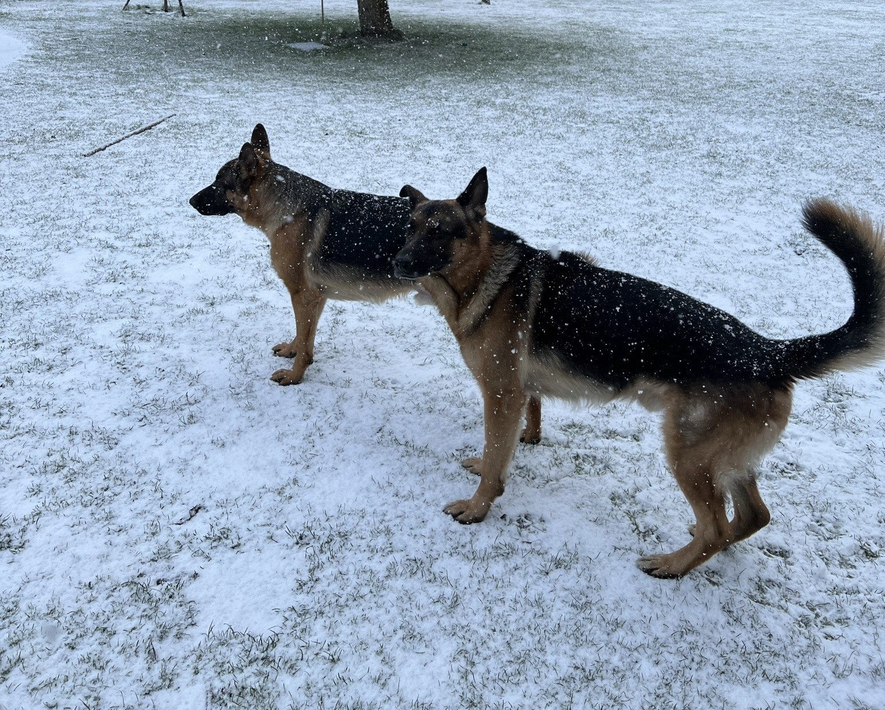
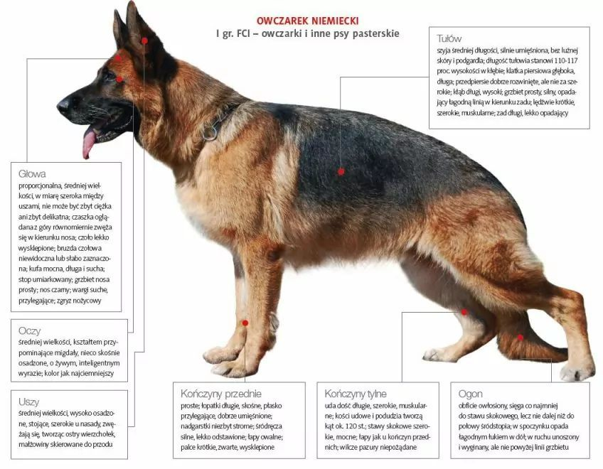
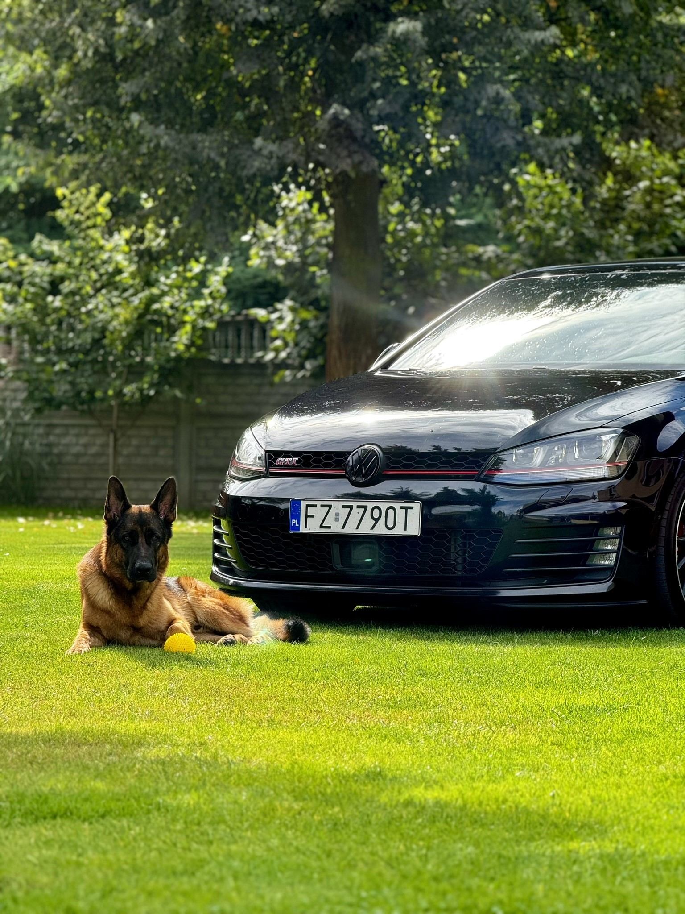
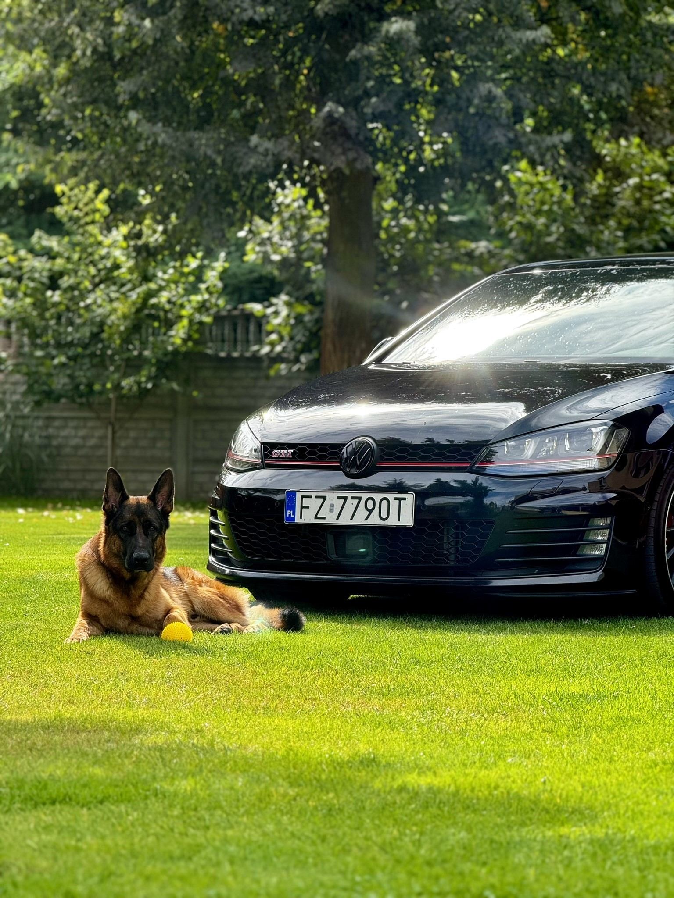
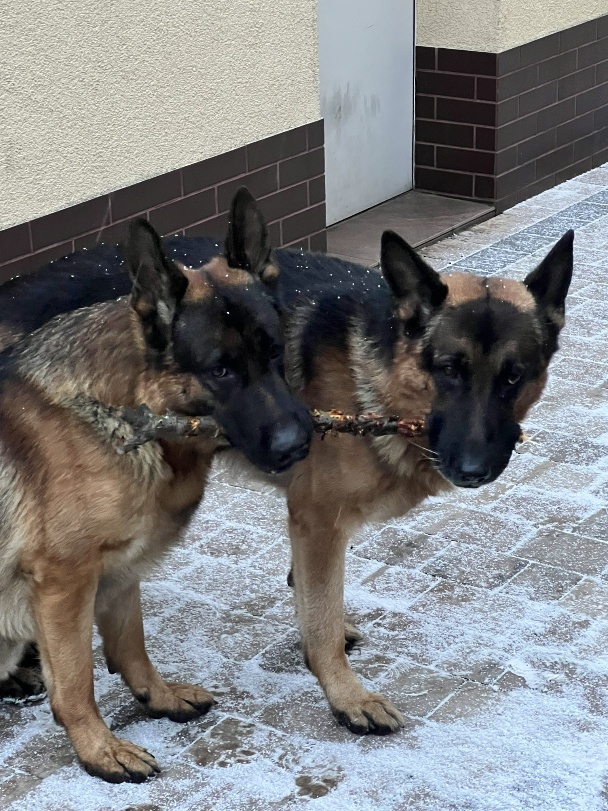
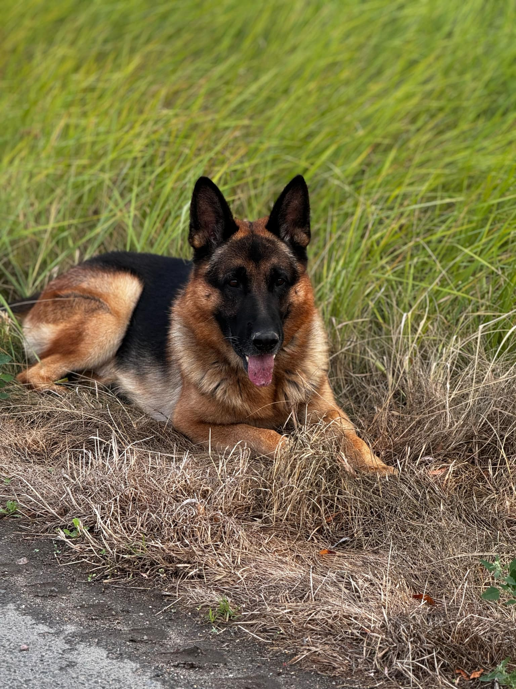
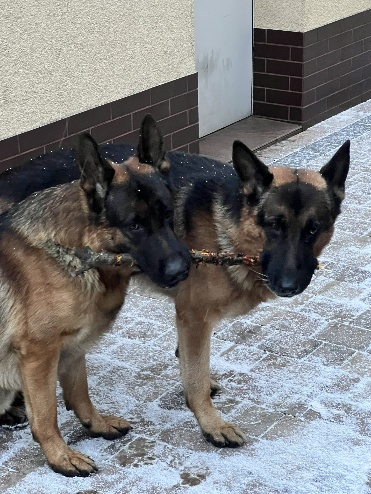
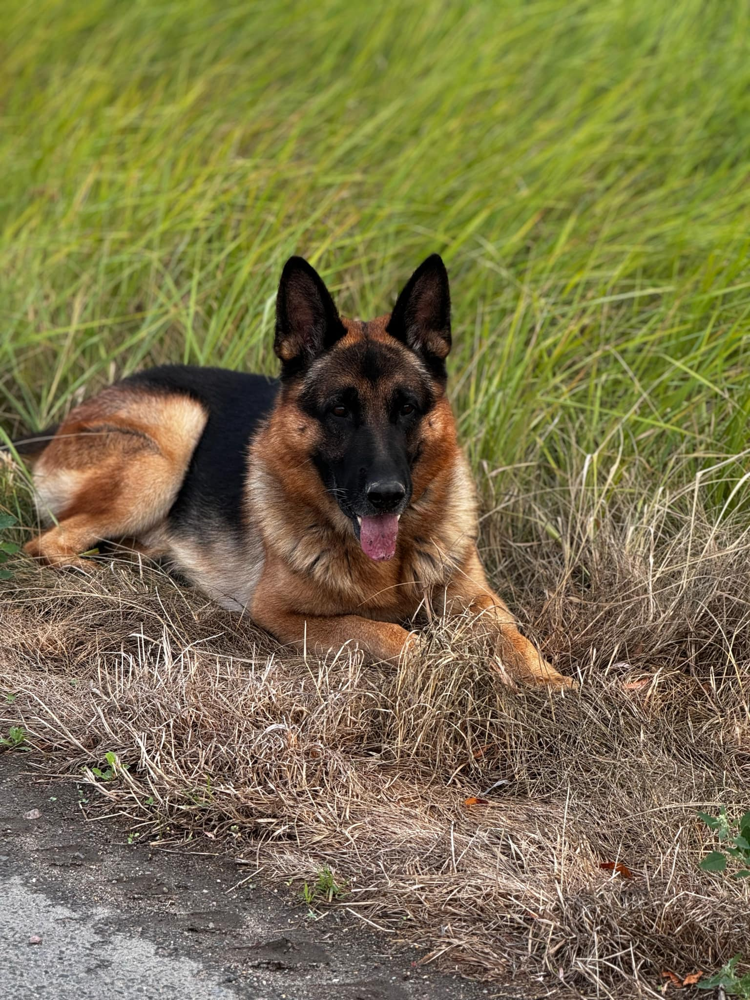

Owczarek Niemiecki
Owczarek niemiecki to inteligentna, lojalna i odważna rasa psa. Znany jest ze swojego silnego charakteru, wyjątkowej inteligencji oraz lojalności wobec właściciela. Jest to rasa często wykorzystywana jako pies pracujący - zarówno w policji, wojsku, jak i jako przewodnik dla osób niewidomych.
Cechy Owczarka Niemieckiego
Owczarki niemieckie to psy o średniej wielkości, bardzo dobrze umięśnione, z silną budową ciała. Mają charakterystyczną, proporcjonalną sylwetkę, która podkreśla ich siłę i wytrzymałość. Są znane z dużej inteligencji, dzięki czemu łatwo je szkolić. To także psy bardzo lojalne, co sprawia, że doskonale nadają się na towarzyszy rodzinnych oraz jako psy pracujące.
Rasa ta jest energiczna, wymaga regularnej aktywności fizycznej i umysłowej. Owczarki niemieckie uwielbiają pracować i potrzebują zadań, które stymulują zarówno ich ciało, jak i umysł.
Główne cechy owczarków niemieckich
- Silna budowa ciała
- Inteligencja
- Lojalność
- Energiczność
- Łatwość w szkoleniu
Historia Rasy
Owczarek niemiecki pochodzi z Niemiec, a jego historia sięga końca XIX wieku. Został stworzony jako pies pasterski, który miał za zadanie pilnować i zganiać stada owiec. W 1899 roku Max von Stephanitz, uznawany za twórcę rasy, założył klub owczarka niemieckiego i ustalił standardy, które miały promować najlepsze cechy użytkowe tych psów.
W czasie obu wojen światowych owczarki niemieckie były szeroko wykorzystywane jako psy wojskowe, ze względu na ich inteligencję, posłuszeństwo oraz wszechstronność. Do dziś są jednymi z najpopularniejszych ras psów pracujących na całym świecie.
Mój owczarek - Max
Max - 4 lata
Max to wspaniały pies, pełen energii i zawsze gotowy do zabawy. Uwielbia długie spacery oraz aportowanie piłki. Jest bardzo czuły i lojalny, a jego ulubionym zajęciem jest pilnowanie domu i dbanie o bezpieczeństwo naszej rodziny.
 


Mój owczarek - Fado
Fado - 7 lat
Fado to spokojniejszy z moich dwóch owczarków. Jest bardzo mądry i opiekuńczy. Jego ulubionym zajęciem jest odpoczywanie w cieniu drzew i obserwowanie otoczenia. Fado uwielbia również uczyć się nowych sztuczek i zawsze jest chętny do współpracy.
 


